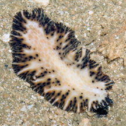
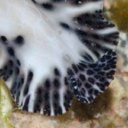
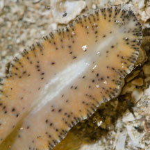
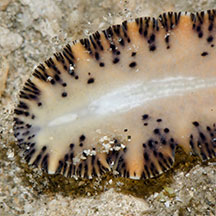
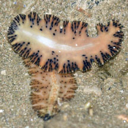

|
|
| flatworms text index | photo index |
| worms > Phylum Platyhelminthes > Class Turbellaria > Order Polycladida |
| Punctuated
flatworm Maritigrella fuscopunctata* Family Euryleptidae updated Feb 2020 Where seen? This well camouflaged worm is so far most commonly seen at Chek Jawa, among coral rubble usually at night. Features: 5-7cm long. Body cream-white to beige with a pattern of black bars or spots in bars along the edges with a broad pale centre with orange or darker spots in a honey-comb pattern. Underside has a similiar pattern and colour. Has a pair of tentacles that extend like flaps at the front of the body. A distinguishing feature is black spots on the tentacles. What does it eat? Maritigrella flatworms eat ascidians by sucking out individual animals with their tube-shaped pharynx (a part of the gut) that can be pushed out through the mouth to engulf the prey. |
|
 Chek Jawa, Aug 05 |
 |
*Species are difficult to positively identify without close examination.
On this website, they are grouped by external features for convenience of display.
| Punctuated flatworms on Singapore shores |
On wildsingapore
flickr
|
| Other sightings on Singapore shores |
 Underside. |
 Underside. |
 Chek Jawa, Jul 18 Shared by Dayna Cheah on facebook. |
|
Acknowledgement
References
|